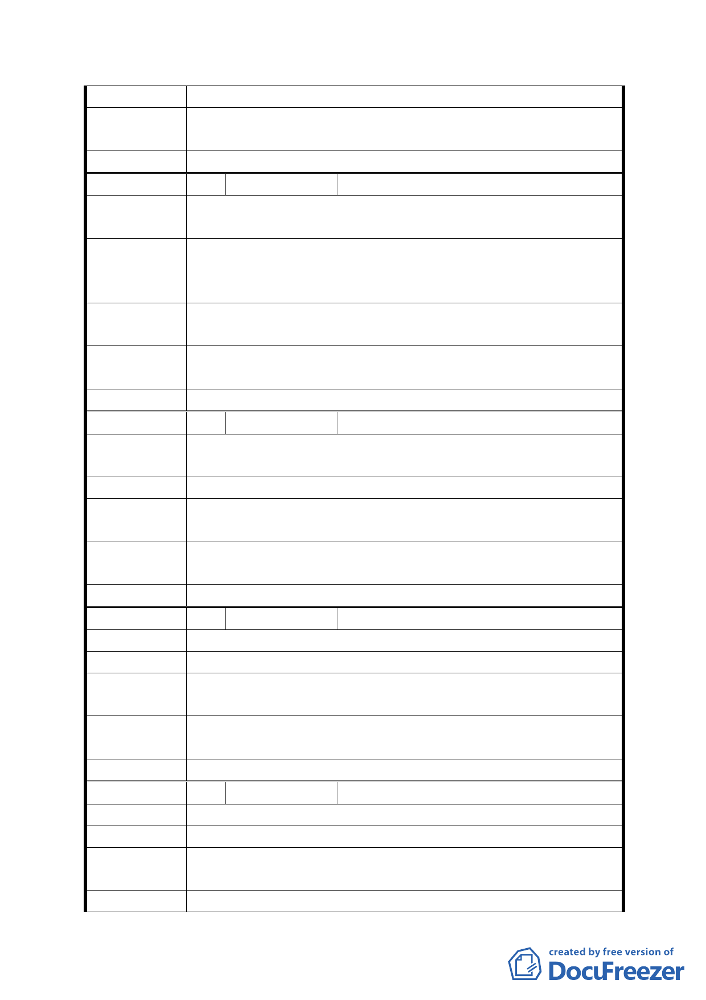

審查結論
市府修正後
回應說明
同編號 7、18。
委員會決議 同意依「市府修正後回應說明」辦理
編 號 35 陳情人
洪淑珉
陳情理由
1. 不要軍營。
2. 不要11000立方公尺的貯留池。
1. 全面都市計畫更新（遷軍營）與辛亥捷運站相結合。
建 議 辦 法 2. 藝文特區或者經貿特區。
3. 全面拓寬人行道。
第五次專案小組
審查結論
同編號 1
市府修正後
回應說明
同編號 7、18、25。
委員會決議 同意依「市府修正後回應說明」辦理
編 號 36 陳情人
彭慧容
陳情理由
請郝市長派人推嬰兒車在辛亥路4段軍營旁的人行道走一
遍，即知民怨為何！
建議辦法
第五次專案小組
審查結論
同編號 1
市府修正後
回應說明
同編號 25
委員會決議 同意依「市府修正後回應說明」辦理
編 號 37 陳情人
吳玉珍
陳 情 理 由 希望整體規劃都市更新，不要單獨興建貯水池。
建議辦法
第五次專案小組
審查結論
同編號 1
市府修正後
回應說明
同編號 7
委員會決議 同意依「市府修正後回應說明」辦理
編 號 38 陳情人
余祥麟
陳 情 理 由 不要軍營及貯留池。
建 議 辦 法 軍營搬走重新規劃辛亥捷運站的生活圈。
第五次專案小組
審查結論
同編號 1
市府修正後 同編號 7
- 35 -